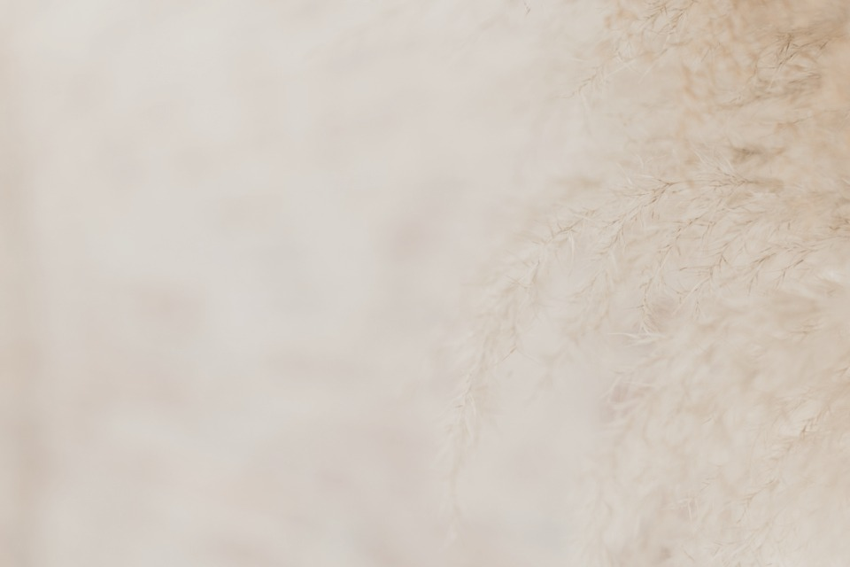
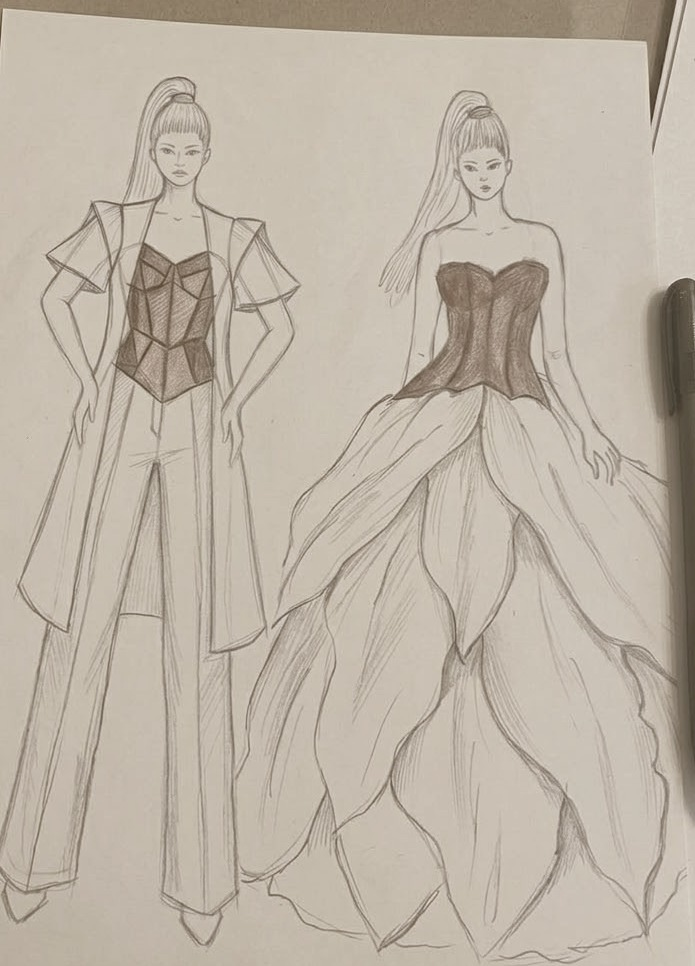
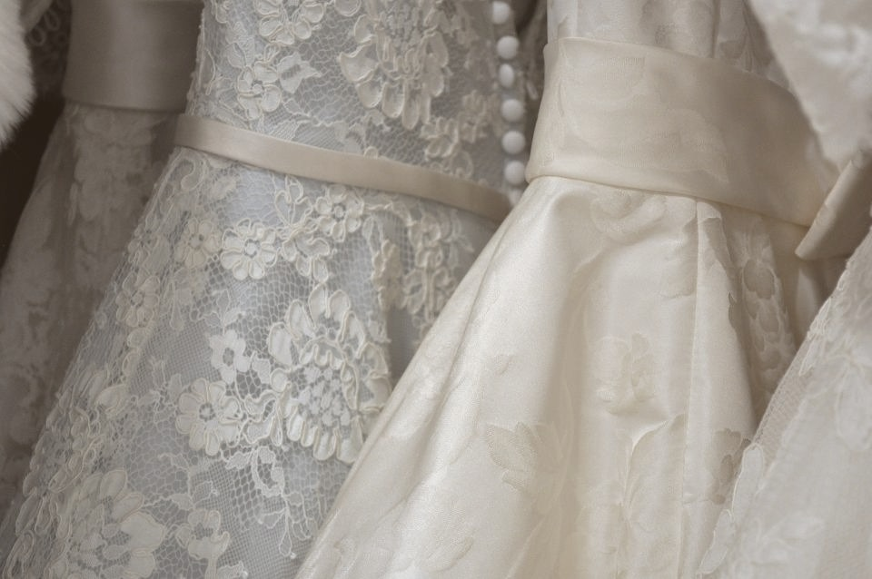
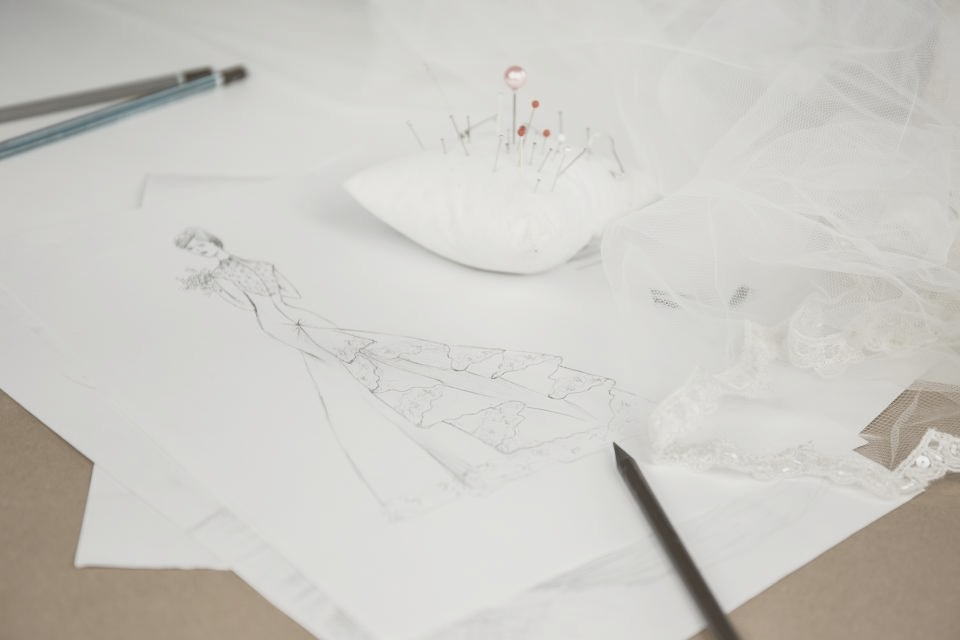

OMMA
Moda femenina hecha a mano
Encaje
Cada detalle, a mano.
El taller

Boceto original
Todo nace a lápiz.

Con alma de alta costura.

Pieza por pieza
Algo hecho para ti.
OMMA
Viste tu esencia
@omma_boutique
Hecho a mano · Envíos a toda Colombia
OMMA
Viste tu esencia